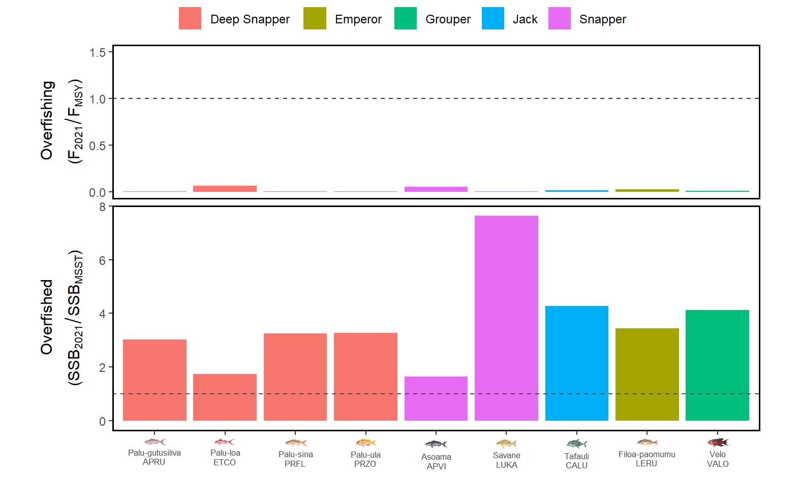

United States Jurisdictional Bottomfishes
The U.S. Jurisdictional bottomfishes are 14 coastal species primarily found in deep-slope habitat around American Samoa, Guam, and the Commonwealth of the Northern Mariana Islands (CNMI). Eleven of these species occur around American Samoa and 13 occur in the Mariana Archipelago. These species are mainly deep snappers from the Etelis and Pristipomoides genre, in addition to a few emperor, grouper, and jack species. Fishing is an integral part of the heritage, tradition, and culture of the local communities in these Pacific Islands.
Most bottomfishing has traditionally been done with hook-and-lines from small boats with outboard engines, primarily for subsistence or local sale. In recent decades, technology and the increased presence of larger vessels have allowed the fisheries to expand offshore into deeper waters around the islands. These species were previously managed as a multi-species complex by the Western Pacific Regional Fishery Management Council, but recent analyses have been conducted at the species level in certain jurisdiction (American Samoa).
American Samoa
The 11 federally managed bottomfish species in American Samoa are Aphareus rutilans, Aprion virescens, Caranx lugubris, Etelis carbunculus, Etelis coruscans, Lethrinus rubrioperculatus, Lutjanus kasmira, Pristipomoides filamentosus, Pristipomoides flavipinnis, Pristipomoides zonatus, and Variola louti. These species are targeted by a small yet valuable boat-based fishery in depths ranging around 100 m to 400 m.
The current benchmark assessment for the American Samoa BMUS developed in 2023 differs significantly from all previous efforts. A major improvement for the 2023 benchmark was to move to single-species, age-structured models. The 2023 assessments integrated catch, an abundance index, and length data from four data sources: historical catches (pre-1986) from older reports; recent catches (post-1985) from boat- and shore-based creel surveys; length compositions from boat-based creel surveys and the biosampling program; and an abundance index from boat-based creel survey interviews.
Of note, two of the eleven bottomfish species could not be assessed due to either the presence of a confounded species in the data (E.carbunculus) or insufficient data (P. filamentosus). For these two species, we used indicator species from the 9 assessed bottomfishes. The species used as indicators were E. coruscans and P. flavipinnis.
The stock status in the terminal year (2021) for all nine bottomfish species was not overfished and that overfishing was not occurring (see figure below). Overfishing is defined by fishing mortality (F) in 2021 being higher than FMSY and overfished status is defined by spawning stock biomass (SSB) in 2021 being lower than SSB at the Minimum Stock Size Threshold.
 Stock status in 2021 of the nine BMUS species with single-species assessment models in the terminal year of the model.
Guam and CNMI
For the Guam and CNMI bottomfishes, the most recent benchmark assessment was developed in 2019 using a Bayesian surplus-production model (JABBA). These assessments were done at the complex level in each jurisdiction, fitting annual biomass estimates to total catch and catch-per-unit-effort (CPUE) data. Commercial fishing sales receipts and fishery-dependent survey data were used to inform catch estimates and abundance trends.
For the CNMI, the stock was healthy (not overfished and not experiencing overfishing). For Guam, the stocks were less healthy, overfished but not experiencing overfishing.
Publications
- Nadon, Marc O. et al. (2023). Stock Assessment of American Samoa Bottomfishes, 2023. https://doi.org/10.25923/0sd4-9a69
- Langseth, Brian J. et al. (2019). Stock assessments of the bottomfish management unit species of Guam, the Commonwealth of the Northern Mariana Islands, and American Samoa, 2019. https://doi.org/10.25923/bz8b-ng72